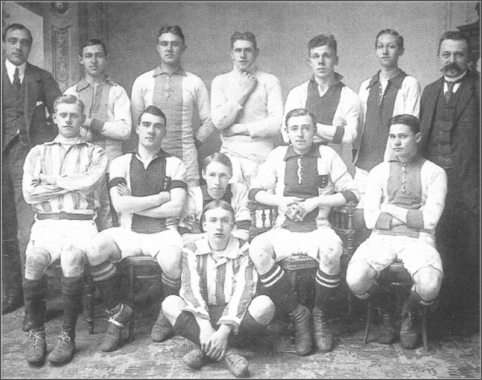

Ajax is een van de meest bekende en succesvolle voetbalclubs van Nederland. Het team is opgericht in 1900 en heeft sindsdien een indrukwekkende staat van dienst opgebouwd.
In de jaren '60 en '70 was Ajax één van de dominante teams in Europa, met legendarische spelers als Johan Cruijff en Johan Neeskens. Tijdens deze periode wonnen ze vier keer de Champions League, wat nog steeds het record is voor een Nederlands team.
In de jaren daarna bleef Ajax succes behalen, met periodes van dominantie afgewisseld met minder succesvolle jaren. In de jaren '90 en het begin van de 21e eeuw wonnen ze onder andere drie keer de Champions League en werden ze regelmatig kampioen van Nederland.
Ook op individueel niveau heeft Ajax talloze top spelers voortgebracht. Zo hebben onder andere Frank Rijkaard, Patrick Kluivert, Wesley Sneijder en Luis Suarez de club verlaten om succesvol te worden bij andere teams.
Tot op heden is Ajax nog steeds een van de topteams in Nederland en doet het ook regelmatig goed op het Europese toneel. Het team heeft een enorme fanatieke aanhang en is een van de meest populaire voetbalclubs van Nederland. Al met al is het een club met een rijke geschiedenis en een indrukwekkend palmares.
